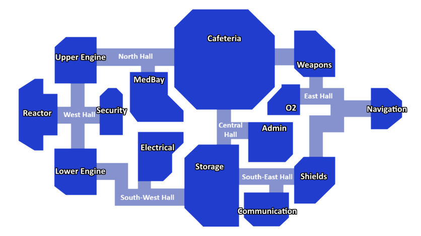

Week 1 - Introduction to AI and Pathfinding
Guided Learning - click to view
Guided learning is additional material for you to read outside of class time
Latest in Uninformed Search!
In the lecture and labs we largely focused on informed search, specifically A-Star. But, last summer, advancements have been made in uninformed search!
A team from Tsinghua University has "beaten" Dijkstra's algorithm.
Your task for this week is to search around and read articles regarding this
To clarify the sensationalist headlines you might read about Dijkstra's algorithm being "beaten":
Dijkstra's algorithm has not been universally defeated. A theoretical "speed limit" was broken by the new algorithm. It achieves this by bypassing the "sorting barrier" that constrained Dijkstra's algorithm.
Dijkstra's algorithm relies on a priority queue that leads to a sorting overhead. The new algorithm avoids this through a recursive technique that clusters and selectively explores nodes, bypassing the need for full sorting.
The new algorithm's advantage is specific to directed graphs with non-negative weights. It is not a general replacement for Dijkstra's.
Lab 1 - Task
In lecture, you got an understanding of how the A-Star algorithm works.
Now it is time for you to implement it!
Don't worry, I understand that it has been a little while, so I have provided you with some code and comments to help click here to download the code files.
It contains the following files:
- mazes/maze1.txt - A demo map, s=start, g=goal, x=obstacle. Obviously you can also create you own
- utils.py - Includes some useful functions including a map importer and will calculate the manhattan distance for you
- pathfinding.py - where you will write the code for the A* algorithm, guided by the comments
- tui.py - Where you will create a simple tui interface to show the path taken
Ideally, I would like you to pair up and engage in 'pair programming' in order to complete this task.
Be sure to share the completed code with your partner
If you finish early, create an interface for your A-Star alogorithm. This can be a simple text interface or you can create something graphical! Python's Turtle Graphics is a good package for this kind of thing.
Lab 2 - Task
At this stage, many will be working on the task set in lab 1. For those that have not completed lab 1, you are advised to continue with that task.
If you did complete the lab 1, consider this:

Above is a map, which you may recognise from the game "Among Us". You are going to build a small application that suggests what route a player may take to get from one room to another. For example, the player may state that they are in "navigation" and they wish to get to "electrical". The program should suggest a route that they can take (preferably the shortest)
A big part of AI is building up the data and knowledge base. So all I am giving you is the map above and the following, very simple, class:
class Node:
def __init__(self, name):
self.name = name
self.neighbours = []
def connect(self, other):
self.neighbours.append(other)
other.neighbours.append(self)
Above will help you build the node tree, but you will need to do the rest. To give you some insight, a very manual approach would look something like this:
cafeteria = Node("Cafeteria")
weapons = Node("Weapons")
cafeteria.connect(weapons)
The node class' connect method is set to create a bidirectional relationship between the two nodes.
Now it is over to you. Firstly consider how are you going to achieve this?
A number of decisions are required here, for example are you going to use Dijkstra's algorithm or A-Star? Make your decisions and then try to implement them.
You are permitted to (and depending on your decisions, may need to) make changes to the Node class